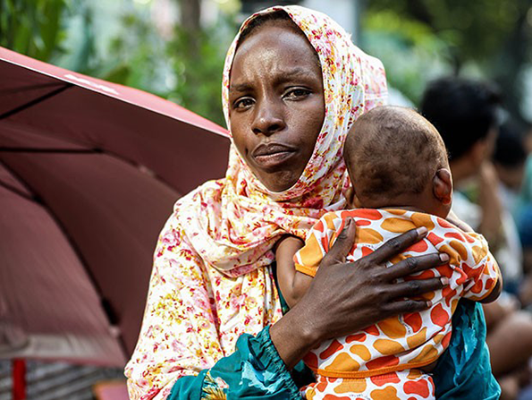

Bullying
As situações mais frequentes de violência é nas escolas estaduais envolveram agressão verbal (83%), bullying (70%), agressão física (53%) e vandalismo (56%).

Xenofobia
Aproximadamente 52% do total de imigrantes que vivem em São Paulo registraram queixa de xenofobia em 2018. Foram 3.882 atendimentos de pessoas de 73 nacionalidades diferentes.
Racismo
Pesquisas apontam que o maior índice de racismo no Estado ocorrem em shoppings e comércios, seguidos de ruas e espaços públicos e, depois, em escolas e faculdades.